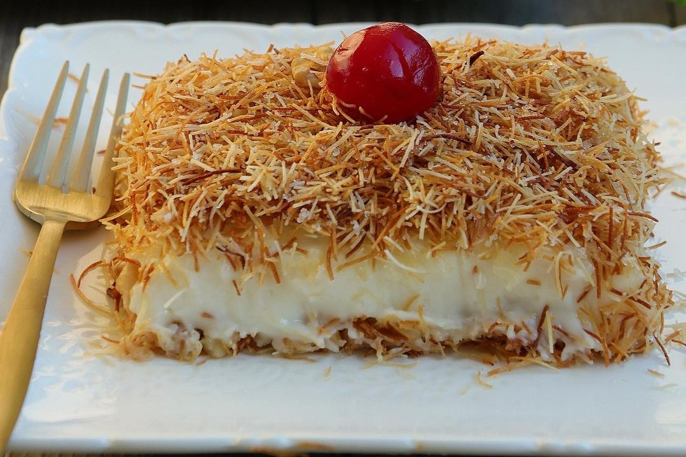

Muhallebili Kadayıf Tarifi
Kadayıf seven ancak şerbetli tatlılardan pek de hoşlanmayan biriyseniz; bu
tatlı tarifi tam size göre! Tereyağı ile çıtır çıtır kavrulan kadayıflar,
sütlü muhallebi ile buluştuktan sonra dilim dilim kesilerek servis ediliyor. Oldukça hafif ve yapımı kolay
muhallebili kadayıf tatlısı, akşam yemeği
sonrasında yiyebileceğiniz kadar hafif.

- Kaç kişilik: 7 kişilik
- Hazırlama süresi: 30 dk
- Pişirme süresi: 20 dk
Malzemeler
Kadayıf için:
- 300 gram tel kadayıf
- 1,5 su bardağı dövülmüş ceviz içi
- 3 yemek kaşığı tereyağı
- 5 yemek kaşığı toz şeker
Muhallebi için:
- 1 lt süt
- 4 yemek kaşığı un
- 3 yemek kaşığı mısır nişastası
- 1 su bardağı toz şeker
- 1 adet yumurta sarısı
- 1 paket vanilya
- 1 kutu krema
Nasıl yapılır?
- Kadayıfı ince ince kırın. Kolay kırılması için 2 saat buzlukta bekletebilirsiniz. Geniş bir kaba alarak elde
ufalayın. Bir teflon tencerede tereyağını eritin.
- Şekeri ve kadayıfı ekleyerek tahta kaşıkla karıştırarak kısık ateşte kavurun.
- Kadayıflar altın sarısı renge dönüşünce 1,5 su bardağı dövülmüş ceviz ekleyerek karıştırın. Tüm malzeme
geniş bir kaba alarak soğumaya bırakın.
- Muhallebisi için 1 litre süt, 1 su bardağı şeker, 4 yemek kaşığı un, 3 yemek kaşığı mısır nişastasını bir
tencereye koyup çırparak karıştın. 1 yumurta sarısı ekleyip
tekrar karıştırdıktan sonra kaynayıncaya kadar pişirin.
- Muhallebi piştikten sonra ocaktan alıp 15-20 dakika soğumaya bırakın. Soğuyan muhallebiye 200 ml (bir kutu)
krema ve vanilya ekleyerek çırpıcıyla karıştırın.
- Kadayıfların yarısını yayvan bir kaba yayın.
- Kadayıfların kalanını muhallebinin üzerine eşit şekilde yayın.
- Dilediğiniz gibi servis edebilirsiniz.
Afiyet olsun!